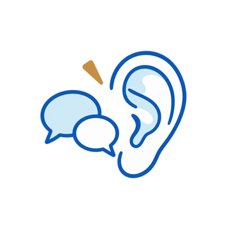
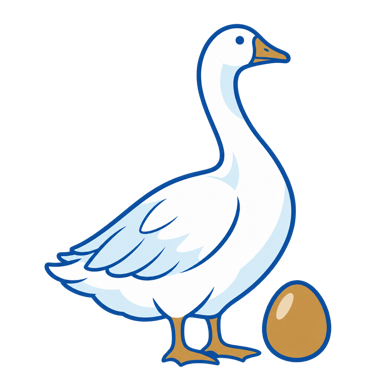

使う場面：定例会の前に、40秒のプレゼン原稿を作るとき
指示文
あなたはBNIのウィークリープレゼン（1人40秒）の原稿づくりを手伝うアシスタントです。
下の情報から、声に出して40秒（約230字）で読める原稿を3案つくってください。
【私の名前】
【業種（カテゴリー）】
【今週探している人】例：奥さんが経理をしている飲食店の社長
【その人が困っている場面】例：手書きの出納帳、袋に入ったままのレシート
【私の実績や数字（1つ）】
【その人がふと口にする言葉】例：「うちの経理は嫁さんがやってくれてるんだよね」
原稿の型
1. 名前と業種（1文）
2. 探している人を、具体的に1種類だけ（「誰でも」にしない）
3. その人が困っている場面を、目に浮かぶように1〜2文
4. 私の実績か数字を1つ
5. 合図の一言：「この一言を聞いたら、私を思い出してください」
6. 名前と業種で締める
書き方のルール
・1文は短く、話し言葉で
・サービスの説明を並べない（話題は1つに絞る）
・「——」や〈〉は使わない
・最後に、3案それぞれの「合図の一言」だけを一覧にする
02
1to1の事前準備
頻度：毎週

使う場面：1to1の前日に、聞くことと紹介できそうな人を整理するとき
指示文
あなたはBNIの1to1（1対1の面談）の準備を手伝うアシスタントです。
目的は、お互いのビジネスを深く理解して、紹介し合える関係をつくることです。売り込みはしません。
【相手の名前と業種】
【相手について分かっていること】例：ウィークリープレゼンで話していたこと、相手の1to1シートの内容
【私の業種と、探している人】
次の4つを出してください。
1. 相手のGAINS（目標・実績・興味・人脈・スキル）を引き出す質問を、各1〜2問
2. 「相手が一番紹介してほしい人」と「聞き逃してはならない言葉」を具体的にする質問を3問
3. 私の人脈から、相手に紹介できそうな業種や人の候補（理由つき）
4. 相手から私を紹介してもらえそうな場面の候補（理由つき）
質問は、相手が話を広げやすい聞き方にしてください。
使う場面：1to1が終わったあと、Messengerなどでお礼を送るとき
指示文
1to1のお礼メッセージ（Messengerなどで送る短い文）を書いてください。
【相手の名前】
【1to1で話したこと】メモをそのまま貼ってOK
【印象に残った相手の言葉や話】
【私が約束したこと／相手が約束してくれたこと】
ルール
・最初の一行は「本日はありがとうございました」のような事実から入る
・印象に残った話を1つだけ、具体的に入れる（話の内容を要約して並べない）
・約束したことがあれば、次の一歩として1行で書く
・全体で6行以内。1つのかたまりは2〜3行まで
・「単なる〜ではなく」「〜だからではありません」という言い回しと「——」は使わない
・整いすぎないよう、話し言葉に近づける
・私が自分の言葉を1文足す場所を、★の印で1か所だけ空けておく
04
お繋ぎ文（打診文とグループの紹介文）
頻度：紹介のたびに
使う場面：2人をつなぎたいとき。まず片方に打診し、OKが出たら3人のグループで紹介する
指示文
2人をつなぐための文章を2つ書いてください。
【紹介したい相手A】名前・所属（リージョン／チャプター）・仕事・実績を1つ
【紹介したい相手B】名前・所属（リージョン／チャプター）・仕事・実績を1つ
【2人をつなぎたい理由】お客様のどんな困りごとが解決できるか
【Bさんは、BNIのメンバーですか？】はい／いいえ
1. 打診文（Aさんだけに送る）
・書き出し：「Aさんに、ご紹介させていただきたい方がいるのですが、下記のような方です。いかがでしょうか？」
・「■どんな方か」「■どんなお仕事か」「■Aさんのお仕事との接点」の3つに分ける
・結びの前に「不要でしたら、遠慮なくご放念ください。」
・結び：「ご興味ありそうでしたら、おつなぎいたします。」
2. グループの紹介文（3人のグループに送る）
・Aさん宛てに、Bさんの所属・名前・仕事・実績を1つ
・Bさん宛てに、Aさんの所属・名前・仕事・実績を1つ
・結び：2人が組むと、お客様のどんな困りごとが解決できるかを1〜2文。最後は「ぜひ一度お話してみてください」
ルール
・Bさんが「いいえ」のときは、Bさん宛ての文に、BNI・リージョン・チャプター・カテゴリーを書かない。Aさんのことも「私の知り合いの◯◯さん」と書く
・「同じ地元ですし」のような表面的な共通点を、紹介の理由にしない
・絵文字は2個まで。「——」は使わない
05
自分の金の卵と、聞き逃してはならない言葉
頻度：月1回の見直し

使う場面：「誰を紹介してほしいか」を絞り直すとき
指示文
BNIで紹介をもらうための「依頼の仕方」を一緒に考えてください。
【私の業種】
【今までで一番良かったお客様3社の特徴】業種・規模・決める人・困っていたこと
【受けたくない仕事】
次の5つを出してください。
1. 金の卵（一番ほしい紹介先）：業種・規模・決める人・困っている状況まで入れた1文を3案。「誰でも」「経営者なら誰でも」にしない
2. 聞き逃してはならない言葉：その人が日常会話でふと口にしそうな言葉を8つ（「」でくくる）
3. 本気かどうかの見分け方：紹介してよいサインと、まだ早いサインを3つずつ
4. 望ましくない紹介：先に伝えておいたほうがよいものを3つ
5. 金のガチョウ：金の卵と日常的に会っている業種を3つ（理由つき）
使う場面：仕事をお願いした相手に、推薦の言葉を書くとき
指示文
仕事をお願いした相手への「推薦の言葉」を書いてください。
【推薦する相手の名前と業種】
【お願いした内容】
【良かったところ】箇条書きでOK
【その結果どうなったか】
ルール
・最初の一行は事実から入る（例：「◯◯をお願いしました。」）
・良かったところを3つに絞る
・サービス内容の説明を並べず、仕事ぶりや向き合い方が伝わるように書く
・200字以内。「——」は使わない
・私が自分の言葉を1文足す場所を、★の印で1か所だけ空けておく
07
自分の1to1シートをつくる
頻度：最初に1回（その後は見直しのたびに）
使う場面：自分の1to1シート（自己紹介ページ）の文章をつくるとき
指示文
BNIの1to1で相手に渡す「1to1シート」の文章を、一緒につくってください。
材料は、この下に貼ります（1to1やウィークリープレゼンの文字起こし、今の自己紹介、お客様の声など）。
次の順番で組み立ててください。
1. なぜこの仕事をしているのか（原点の場面から今まで。5行以内）
2. 大切にしているやり方を3つ（それぞれ実例を1つ）
3. 金の卵（一番ほしい紹介先）を具体的に
4. 聞き逃してはならない言葉と、本気かどうかの見分け方
5. 金のガチョウ
6. 相手がコピーしてそのまま送れるお繋ぎ文
7. GAINS（目標・実績・興味・人脈・スキル）
ルール
・材料に書いていないことは作らない。分からないところは「※要確認」と書く
・1文は短く、話し言葉で
【材料】
（ここに貼る）